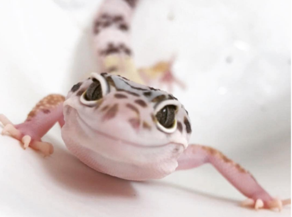
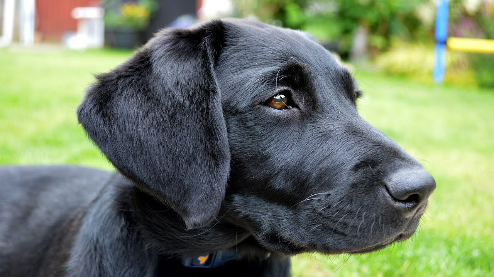
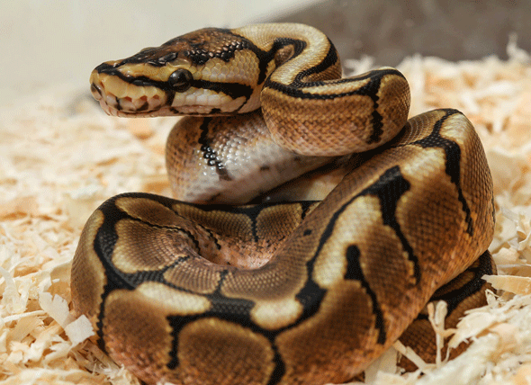

Seam

Seam is our newest addition to the shelter. She has a very unusual fur pattern on her face. She is a very curious cat, but very playful and friendly.
- Age: 2.8 years
- Species: British Shorthair
- Food: Dry cat food
Tom
Tom is our little friendly Gecko. At just 1.5 years old, he is full of energy, (At lease when he's had an hour under a heat lamp.)
Seam
Seam is our newest addition to the shelter. She has a very unusual fur pattern on her face. She is a very curious cat, but very playful and friendly.
Sarah
Sarah is a sweet heart. She comes from a Bad home, and is very shy and afraid of new people. Once she gets to know you, she is one of the nicest puppo's you will ever meet.
Noodle
